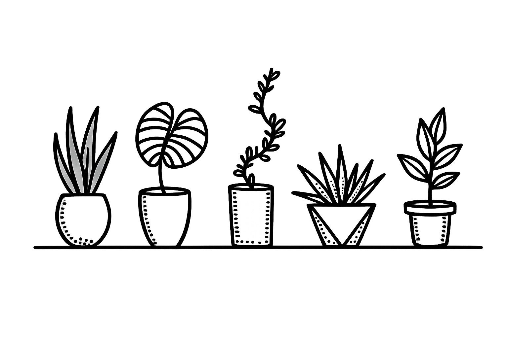

After reading this article, my understanding of the website has improved. The part I got from the reading most is about the website maintenance and what websites mean to us.
About maintenance, the effort of making information accessible all the time is really important. The information in the website should be new, and should be updated a lot. A website with old information will not attract audiences anymore. I really like the part which she said about treating your website as a plant. It does need a lot of care. For me, I used to have a website but it was too hard to do the maintenance. The longer you forget to do the maintenance, the harder you can keep it updated.
A website should be more like a journal, it shows our growth progress. It should not be just a place we do documentation. The information should be still growing.
The concept of handmade websites discussed in this article is quite interesting. In today's technologically advanced world, many things are being replaced, while others are becoming more valuable. Handmade products seem to be gaining appreciation, with people often willing to pay more money and wait longer for something that is purely handcrafted. However, I believe this concept has limitations, and in my understanding, it's limited to tangible objects genuinely made by hand. This makes me question whether handmade websites are truly a necessary and worthwhile method of website creation that needs to be preserved.
I think we first need to clarify the purpose of a website. I believe the fundamental difference between a website and a handcrafted item is that a website serves as a tool, acting as a platform for carrying or displaying content, while the actual focus should be on the content itself, which is what truly deserves attention. Just like when I make jewelry, I might handcraft a chisel, and I might learn how to make a handmade chisel, but when I'm actually working, I'll buy various chisels of different sizes and functions. Websites are the same; I will learn their principles, how they work, or how to add missing functionalities during the website creation process. But I would hardly ever create a website entirely by hand just for the sake of having a handmade website. I believe this contradicts the convenience of a website as a tool, especially in today's technologically advanced world. Technology helps us live more conveniently, and we shouldn't go against this progress by increasing our workload and stress.
What resonated with me most in this article was the part about the disconnect yet close relationship between binary computers and the richness of real life. I've recently been working on a project where I record a node of life activity and then use a computer program to distort it, creating a seemingly chaotic but traceable model, ultimately generating jewelry pieces. My experience in this process is quite similar to what's described in the article. No matter how complex or chaotic my output is, it's still only a tiny fraction of real-life activity. One interesting theory I focused on was that this chaotic process can only produce results in a forward direction and cannot be decoded in reverse. This connects to the article's point that computers can execute commands precisely, or interpret the generated code, because everything is interconnected and can be developed forward or deduced backward. However, when we study real-life activities, everything appears completely disordered from a macroscopic perspective, without any pattern or meaning for analysis.
But I've also seen many interesting designs recently, where artists use code to express life activities and data visualization to simulate the dynamics of the natural world. Many interesting comments also suggest that our world is actually composed of data and code. Just like when training AI, we let the AI experience human activities and the real world to obtain newer, more accurate data for development. This indirectly suggests that the world we live in is composed of data, but this data is not simply represented by code. So I find the concepts of the relationship and disconnect between computers and human life very interesting.